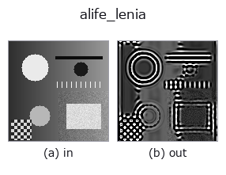

artificial-life op• 데이터 종류: image → image
• 호출: fullseye.apply(img, "alife_lenia", a=0.5, b=0.5)(2-D 는 이미지 1 장 + 스칼라 노브 2 개 a,b∈[0,1] 모델)

*그림은 128×128 합성 입력에서 실제로 실행한 출력. 왼쪽이 입력, 오른쪽이 출력. 점군은 위에서 본 산점도(밝기 = z), 1-D 열은 꺾은선, 볼륨은 z 방향 최대값 투영, 동영상은 가운데 프레임, 복소 영상은 진폭이며, 그림이 되지 않는 반환값은 값 자체를 표시한다.*
노브 a 를 훑기(0.1 / 0.5 / 0.9, 다른 노브는 기본값):
▸ alife_lenia: knob a sweep (docs site)
노브 b 를 훑기(0.1 / 0.5 / 0.9, 다른 노브는 기본값):
▸ alife_lenia: knob b sweep (docs site)
다른 영상에서도(합성 장면 / 사진 / 동전. 윗줄이 입력, 아랫줄이 그 출력. 노브는 기본값):
▸ alife_lenia: other inputs (docs site)
*4열은 컬러 (H,W,3) 입력. 이 op는 채널을 넘나들지 않고 컬러를 다룰 수 있다(색 채널을 세 번째 공간축으로 컨볼루션하지 않음).*
Lenia 연속 세포 자동자(Bert Chan, Complex Systems 2019).
> 아래 상세 설명은 원문입니다 —— 요약과 제목은 번역되어 있습니다.
Lenia generalises Conway's Life to a *continuous* state space, a continuous
neighbourhood and a continuous time step. The field u starts as the image.
A normalised Gaussian ring kernel K of radius R (peaking at relative radius
0.5) gives the potential U = K (*) u as a circular convolution; the growth
mapping G(U) = 2 exp(-(U-mu)^2 / (2 sigma^2)) - 1 is in [-1, 1] and is
integrated explicitly as u <- clip(u + dt * G(U), 0, 1).
`a` sets the growth centre mu = 0.08 + 0.25a, its width
sigma = 0.03 + 0.05a and the time step dt = 0.10 + 0.15a; `b` sets the
number of steps 1 + int(19b). The output is deliberately not binarised
-- keeping intermediate values is exactly what separates Lenia from a
discrete Life rule.
• gallery2d_physics_alife_3d 패밀리 가이드
• 샘플 데이터 카탈로그(DL URL / 라이선스) —— 2-D 는 skimage.data(BSD/public)+ 합성, 3-D 는 실데이터 소스(Stanford/PDS 등)의 DL URL.
• 연산자의 내력·참고문헌 —— 이 연산자 족의 바탕이 된 연구/기법의 출처.
• 알고리즘의 정전(저자·연도)과 용도는 위의 패밀리 사용 가이드에 적혀 있습니다.
아래 프로그램은 실제로 실행됨을 확인했습니다(그림과 같은 입력). Studio 도움말에서는 이 블록이 버튼이 되어 즉시 불러와 실행할 수 있습니다.
alife_lenia 0.50 0.50
▸ Load this pipeline · Load & run
• gallery2d_physics_alife_3d — py -3.11 examples/gallery2d_physics_alife_3d.py
image 를 입력으로 받는 것)identity · gaussian · mean_box · bilateral · unsharp · median · min_filter · max_filter
artificial-life)alife_gray_scott · alife_turing · alife_life_step · alife_cyclic_ca · alife_perona_malik · alife_curvature_flow · alife_dla · alife_reaction_bz
*Provenance: ops.py — 2D 연산자 레지스트리. 이 op 노트는 tools/opdocs.py md 가 자동 생성합니다(직접 편집하지 마세요).*
© 2026 Kazufumi Furuse — Fullseye operator documentation. Licensed under Apache-2.0.
{kind=link}
{kind=link}
{kind=link}